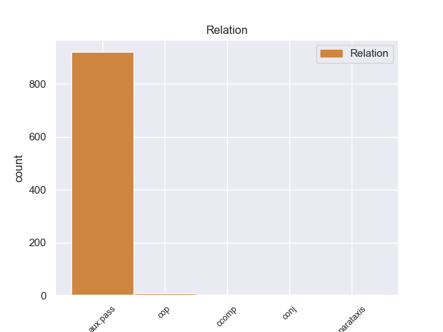
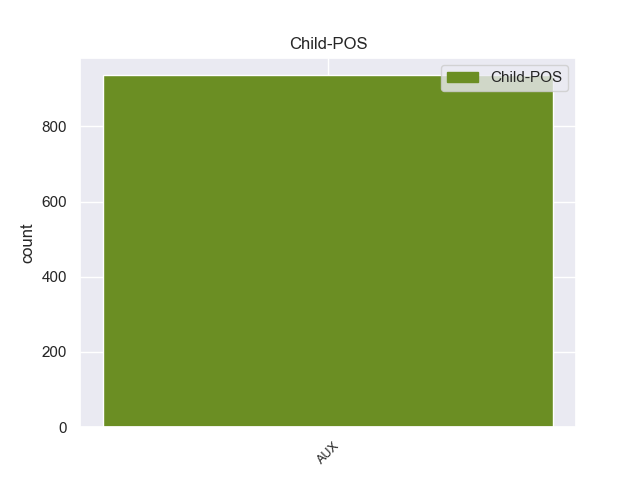

Distribution of features within this leaf



Agreement Rules sorted by frequency.
- When the dependent token is the passive auxiliary(aux:pass) of the head token, and the dependent token is AUX.
1 A _ _ _ _ 0 _ _ _
2 few _ _ _ _ 0 _ _ _
3 minutes _ _ _ _ 0 _ _ _
4 after _ _ _ _ 0 _ _ _
5 I _ _ _ _ 0 _ _ _
6 left _ _ _ _ 0 _ _ _
7 , _ _ _ _ 0 _ _ _
8 I _ _ _ _ 0 _ _ _
9 was be AUX VBD Mood=Ind|Number=Sing|Person=1|Tense=Past|VerbForm=Fin 10 aux:pass 10:aux:pass _
10 called call VERB VBN Tense=Past|VerbForm=Part|Voice=Pass 0 _ _ _
11 and _ _ _ _ 0 _ _ _
12 informed _ _ _ _ 0 _ _ _
13 that _ _ _ _ 0 _ _ _
14 " _ _ _ _ 0 _ _ _
15 I _ _ _ _ 0 _ _ _
16 " _ _ _ _ 0 _ _ _
17 left _ _ _ _ 0 _ _ _
18 my _ _ _ _ 0 _ _ _
19 wheel _ _ _ _ 0 _ _ _
20 lock _ _ _ _ 0 _ _ _
21 ( _ _ _ _ 0 _ _ _
22 which _ _ _ _ 0 _ _ _
23 they _ _ _ _ 0 _ _ _
24 should _ _ _ _ 0 _ _ _
25 have _ _ _ _ 0 _ _ _
26 left _ _ _ _ 0 _ _ _
27 in _ _ _ _ 0 _ _ _
28 the _ _ _ _ 0 _ _ _
29 car _ _ _ _ 0 _ _ _
30 ) _ _ _ _ 0 _ _ _
31 . _ _ _ _ 0 _ _ _
1 And _ _ _ _ 0 _ _ _
2 it _ _ _ _ 0 _ _ _
3 's be AUX VBZ Mood=Ind|Number=Sing|Person=3|Tense=Pres|VerbForm=Fin 10 cop 10:cop _
4 not _ _ _ _ 0 _ _ _
5 all _ _ _ _ 0 _ _ _
6 about _ _ _ _ 0 _ _ _
7 how _ _ _ _ 0 _ _ _
8 much _ _ _ _ 0 _ _ _
9 you _ _ _ _ 0 _ _ _
10 earn earn VERB VBP Mood=Ind|Tense=Pres|VerbForm=Fin 0 _ _ _
11 , _ _ _ _ 0 _ _ _
12 cost _ _ _ _ 0 _ _ _
13 of _ _ _ _ 0 _ _ _
14 living _ _ _ _ 0 _ _ _
15 is _ _ _ _ 0 _ _ _
16 much _ _ _ _ 0 _ _ _
17 higher _ _ _ _ 0 _ _ _
18 in _ _ _ _ 0 _ _ _
19 many _ _ _ _ 0 _ _ _
20 cities _ _ _ _ 0 _ _ _
21 in _ _ _ _ 0 _ _ _
22 Australia _ _ _ _ 0 _ _ _
23 . _ _ _ _ 0 _ _ _
1 At _ _ _ _ 0 _ _ _
2 one _ _ _ _ 0 _ _ _
3 point _ _ _ _ 0 _ _ _
4 they _ _ _ _ 0 _ _ _
5 told tell VERB VBD Mood=Ind|Tense=Past|VerbForm=Fin 0 _ _ _
6 me _ _ _ _ 0 _ _ _
7 the _ _ _ _ 0 _ _ _
8 dog _ _ _ _ 0 _ _ _
9 had _ _ _ _ 0 _ _ _
10 been _ _ _ _ 0 _ _ _
11 fixed _ _ _ _ 0 _ _ _
12 , _ _ _ _ 0 _ _ _
13 the _ _ _ _ 0 _ _ _
14 next _ _ _ _ 0 _ _ _
15 day _ _ _ _ 0 _ _ _
16 it _ _ _ _ 0 _ _ _
17 had have AUX VBD Mood=Ind|Tense=Past|VerbForm=Fin 5 ccomp 5:ccomp SpaceAfter=No
18 n't _ _ _ _ 0 _ _ _
19 . _ _ _ _ 0 _ _ _
1 I _ _ _ _ 0 _ _ _
2 considered consider VERB VBD Mood=Ind|Tense=Past|VerbForm=Fin 0 _ _ _
3 just _ _ _ _ 0 _ _ _
4 leaving _ _ _ _ 0 _ _ _
5 after _ _ _ _ 0 _ _ _
6 going _ _ _ _ 0 _ _ _
7 inside _ _ _ _ 0 _ _ _
8 and _ _ _ _ 0 _ _ _
9 nearly _ _ _ _ 0 _ _ _
10 did do AUX VBD Mood=Ind|Tense=Past|VerbForm=Fin 2 conj 2:conj:and SpaceAfter=No
11 . _ _ _ _ 0 _ _ _
Disagree Examples:
1 Over _ _ _ _ 0 _ _ _
2 300 _ _ _ _ 0 _ _ _
3 Iraqis _ _ _ _ 0 _ _ _
4 are be AUX VBP Mood=Ind|Tense=Pres|VerbForm=Fin 5 aux:pass 5:aux:pass _
5 reported report VERB VBN Tense=Past|VerbForm=Part|Voice=Pass 0 _ _ _
6 dead _ _ _ _ 0 _ _ _
7 and _ _ _ _ 0 _ _ _
8 500 _ _ _ _ 0 _ _ _
8.1 reported _ _ _ _ 0 _ _ _
9 wounded _ _ _ _ 0 _ _ _
10 in _ _ _ _ 0 _ _ _
11 Fallujah _ _ _ _ 0 _ _ _
12 alone _ _ _ _ 0 _ _ _
13 . _ _ _ _ 0 _ _ _
1 Azzaman _ _ _ _ 0 _ _ _
2 newspaper _ _ _ _ 0 _ _ _
3 mentioned _ _ _ _ 0 _ _ _
4 an _ _ _ _ 0 _ _ _
5 announcement _ _ _ _ 0 _ _ _
6 signed _ _ _ _ 0 _ _ _
7 by _ _ _ _ 0 _ _ _
8 Abdul _ _ _ _ 0 _ _ _
9 Aziz _ _ _ _ 0 _ _ _
10 bin _ _ _ _ 0 _ _ _
11 Muqrin _ _ _ _ 0 _ _ _
12 , _ _ _ _ 0 _ _ _
13 an _ _ _ _ 0 _ _ _
14 Al _ _ _ _ 0 _ _ _
15 - _ _ _ _ 0 _ _ _
16 Qaeda _ _ _ _ 0 _ _ _
17 operative _ _ _ _ 0 _ _ _
18 in _ _ _ _ 0 _ _ _
19 Saudi _ _ _ _ 0 _ _ _
20 Arabia _ _ _ _ 0 _ _ _
21 on _ _ _ _ 0 _ _ _
22 an _ _ _ _ 0 _ _ _
23 Islamic _ _ _ _ 0 _ _ _
24 website _ _ _ _ 0 _ _ _
25 ' _ _ _ _ 0 _ _ _
26 the _ _ _ _ 0 _ _ _
27 voice _ _ _ _ 0 _ _ _
28 of _ _ _ _ 0 _ _ _
29 Jihad _ _ _ _ 0 _ _ _
30 ' _ _ _ _ 0 _ _ _
31 , _ _ _ _ 0 _ _ _
32 in _ _ _ _ 0 _ _ _
33 which _ _ _ _ 0 _ _ _
34 he _ _ _ _ 0 _ _ _
35 stated _ _ _ _ 0 _ _ _
36 that _ _ _ _ 0 _ _ _
37 " _ _ _ _ 0 _ _ _
38 although _ _ _ _ 0 _ _ _
39 mutilating _ _ _ _ 0 _ _ _
40 dead _ _ _ _ 0 _ _ _
41 bodies _ _ _ _ 0 _ _ _
42 is be AUX VBZ Mood=Ind|Number=Sing|Person=3|Tense=Pres|VerbForm=Fin 45 aux:pass 45:aux:pass _
43 not _ _ _ _ 0 _ _ _
44 originally _ _ _ _ 0 _ _ _
45 permitted permit VERB VBN Tense=Past|VerbForm=Part|Voice=Pass 0 _ _ _
46 in _ _ _ _ 0 _ _ _
47 Islam _ _ _ _ 0 _ _ _
48 , _ _ _ _ 0 _ _ _
49 but _ _ _ _ 0 _ _ _
50 in _ _ _ _ 0 _ _ _
51 this _ _ _ _ 0 _ _ _
52 case _ _ _ _ 0 _ _ _
53 it _ _ _ _ 0 _ _ _
54 is _ _ _ _ 0 _ _ _
55 allowed _ _ _ _ 0 _ _ _
56 if _ _ _ _ 0 _ _ _
57 Muslims _ _ _ _ 0 _ _ _
58 use _ _ _ _ 0 _ _ _
59 it _ _ _ _ 0 _ _ _
60 against _ _ _ _ 0 _ _ _
61 infidels _ _ _ _ 0 _ _ _
62 to _ _ _ _ 0 _ _ _
63 deter _ _ _ _ 0 _ _ _
64 them _ _ _ _ 0 _ _ _
65 from _ _ _ _ 0 _ _ _
66 committing _ _ _ _ 0 _ _ _
67 criminal _ _ _ _ 0 _ _ _
68 actions _ _ _ _ 0 _ _ _
69 " _ _ _ _ 0 _ _ _
70 . _ _ _ _ 0 _ _ _
1 Azzaman _ _ _ _ 0 _ _ _
2 newspaper _ _ _ _ 0 _ _ _
3 mentioned _ _ _ _ 0 _ _ _
4 an _ _ _ _ 0 _ _ _
5 announcement _ _ _ _ 0 _ _ _
6 signed _ _ _ _ 0 _ _ _
7 by _ _ _ _ 0 _ _ _
8 Abdul _ _ _ _ 0 _ _ _
9 Aziz _ _ _ _ 0 _ _ _
10 bin _ _ _ _ 0 _ _ _
11 Muqrin _ _ _ _ 0 _ _ _
12 , _ _ _ _ 0 _ _ _
13 an _ _ _ _ 0 _ _ _
14 Al _ _ _ _ 0 _ _ _
15 - _ _ _ _ 0 _ _ _
16 Qaeda _ _ _ _ 0 _ _ _
17 operative _ _ _ _ 0 _ _ _
18 in _ _ _ _ 0 _ _ _
19 Saudi _ _ _ _ 0 _ _ _
20 Arabia _ _ _ _ 0 _ _ _
21 on _ _ _ _ 0 _ _ _
22 an _ _ _ _ 0 _ _ _
23 Islamic _ _ _ _ 0 _ _ _
24 website _ _ _ _ 0 _ _ _
25 ' _ _ _ _ 0 _ _ _
26 the _ _ _ _ 0 _ _ _
27 voice _ _ _ _ 0 _ _ _
28 of _ _ _ _ 0 _ _ _
29 Jihad _ _ _ _ 0 _ _ _
30 ' _ _ _ _ 0 _ _ _
31 , _ _ _ _ 0 _ _ _
32 in _ _ _ _ 0 _ _ _
33 which _ _ _ _ 0 _ _ _
34 he _ _ _ _ 0 _ _ _
35 stated _ _ _ _ 0 _ _ _
36 that _ _ _ _ 0 _ _ _
37 " _ _ _ _ 0 _ _ _
38 although _ _ _ _ 0 _ _ _
39 mutilating _ _ _ _ 0 _ _ _
40 dead _ _ _ _ 0 _ _ _
41 bodies _ _ _ _ 0 _ _ _
42 is _ _ _ _ 0 _ _ _
43 not _ _ _ _ 0 _ _ _
44 originally _ _ _ _ 0 _ _ _
45 permitted _ _ _ _ 0 _ _ _
46 in _ _ _ _ 0 _ _ _
47 Islam _ _ _ _ 0 _ _ _
48 , _ _ _ _ 0 _ _ _
49 but _ _ _ _ 0 _ _ _
50 in _ _ _ _ 0 _ _ _
51 this _ _ _ _ 0 _ _ _
52 case _ _ _ _ 0 _ _ _
53 it _ _ _ _ 0 _ _ _
54 is be AUX VBZ Mood=Ind|Number=Sing|Person=3|Tense=Pres|VerbForm=Fin 55 aux:pass 55:aux:pass _
55 allowed allow VERB VBN Tense=Past|VerbForm=Part|Voice=Pass 0 _ _ _
56 if _ _ _ _ 0 _ _ _
57 Muslims _ _ _ _ 0 _ _ _
58 use _ _ _ _ 0 _ _ _
59 it _ _ _ _ 0 _ _ _
60 against _ _ _ _ 0 _ _ _
61 infidels _ _ _ _ 0 _ _ _
62 to _ _ _ _ 0 _ _ _
63 deter _ _ _ _ 0 _ _ _
64 them _ _ _ _ 0 _ _ _
65 from _ _ _ _ 0 _ _ _
66 committing _ _ _ _ 0 _ _ _
67 criminal _ _ _ _ 0 _ _ _
68 actions _ _ _ _ 0 _ _ _
69 " _ _ _ _ 0 _ _ _
70 . _ _ _ _ 0 _ _ _
1 The _ _ _ _ 0 _ _ _
2 dynamics _ _ _ _ 0 _ _ _
3 of _ _ _ _ 0 _ _ _
4 change _ _ _ _ 0 _ _ _
5 in _ _ _ _ 0 _ _ _
6 the _ _ _ _ 0 _ _ _
7 state _ _ _ _ 0 _ _ _
8 of _ _ _ _ 0 _ _ _
9 health _ _ _ _ 0 _ _ _
10 of _ _ _ _ 0 _ _ _
11 children _ _ _ _ 0 _ _ _
12 affected _ _ _ _ 0 _ _ _
13 by _ _ _ _ 0 _ _ _
14 the _ _ _ _ 0 _ _ _
15 Chernobyl _ _ _ _ 0 _ _ _
16 accident _ _ _ _ 0 _ _ _
17 in _ _ _ _ 0 _ _ _
18 all _ _ _ _ 0 _ _ _
19 three _ _ _ _ 0 _ _ _
20 countries _ _ _ _ 0 _ _ _
21 - _ _ _ _ 0 _ _ _
22 Belarus _ _ _ _ 0 _ _ _
23 , _ _ _ _ 0 _ _ _
24 Russia _ _ _ _ 0 _ _ _
25 , _ _ _ _ 0 _ _ _
26 and _ _ _ _ 0 _ _ _
27 Ukraine _ _ _ _ 0 _ _ _
28 - _ _ _ _ 0 _ _ _
29 in _ _ _ _ 0 _ _ _
30 the _ _ _ _ 0 _ _ _
31 post-accident _ _ _ _ 0 _ _ _
32 period _ _ _ _ 0 _ _ _
33 is be AUX VBZ Mood=Ind|Number=Sing|Person=3|Tense=Pres|VerbForm=Fin 34 aux:pass 34:aux:pass _
34 characterized characterize VERB VBN Tense=Past|VerbForm=Part|Voice=Pass 0 _ _ _
35 by _ _ _ _ 0 _ _ _
36 persistent _ _ _ _ 0 _ _ _
37 negative _ _ _ _ 0 _ _ _
38 tendencies _ _ _ _ 0 _ _ _
39 : _ _ _ _ 0 _ _ _
40 the _ _ _ _ 0 _ _ _
41 morbidity _ _ _ _ 0 _ _ _
42 rate _ _ _ _ 0 _ _ _
43 is _ _ _ _ 0 _ _ _
44 going _ _ _ _ 0 _ _ _
45 up _ _ _ _ 0 _ _ _
46 , _ _ _ _ 0 _ _ _
47 the _ _ _ _ 0 _ _ _
48 number _ _ _ _ 0 _ _ _
49 of _ _ _ _ 0 _ _ _
50 really _ _ _ _ 0 _ _ _
51 healthy _ _ _ _ 0 _ _ _
52 children _ _ _ _ 0 _ _ _
53 is _ _ _ _ 0 _ _ _
54 dropping _ _ _ _ 0 _ _ _
55 , _ _ _ _ 0 _ _ _
56 and _ _ _ _ 0 _ _ _
57 disability _ _ _ _ 0 _ _ _
58 is _ _ _ _ 0 _ _ _
59 increasing _ _ _ _ 0 _ _ _
60 . _ _ _ _ 0 _ _ _
1 Bush _ _ _ _ 0 _ _ _
2 , _ _ _ _ 0 _ _ _
3 in _ _ _ _ 0 _ _ _
4 answering _ _ _ _ 0 _ _ _
5 the _ _ _ _ 0 _ _ _
6 question _ _ _ _ 0 _ _ _
7 about _ _ _ _ 0 _ _ _
8 the _ _ _ _ 0 _ _ _
9 leader _ _ _ _ 0 _ _ _
10 of _ _ _ _ 0 _ _ _
11 Pakistan _ _ _ _ 0 _ _ _
12 , _ _ _ _ 0 _ _ _
13 also _ _ _ _ 0 _ _ _
14 said _ _ _ _ 0 _ _ _
15 : _ _ _ _ 0 _ _ _
16 " _ _ _ _ 0 _ _ _
17 The _ _ _ _ 0 _ _ _
18 new _ _ _ _ 0 _ _ _
19 Pakistani _ _ _ _ 0 _ _ _
20 general _ _ _ _ 0 _ _ _
21 , _ _ _ _ 0 _ _ _
22 he _ _ _ _ 0 _ _ _
23 's be AUX VBZ Mood=Ind|Number=Sing|Person=3|Tense=Pres|VerbForm=Fin 26 aux:pass 26:aux:pass _
24 just _ _ _ _ 0 _ _ _
25 been _ _ _ _ 0 _ _ _
26 elected elect VERB VBN Tense=Past|VerbForm=Part|Voice=Pass 0 _ _ _
27 -- _ _ _ _ 0 _ _ _
28 not _ _ _ _ 0 _ _ _
29 elected _ _ _ _ 0 _ _ _
30 , _ _ _ _ 0 _ _ _
31 this _ _ _ _ 0 _ _ _
32 guy _ _ _ _ 0 _ _ _
33 took _ _ _ _ 0 _ _ _
34 over _ _ _ _ 0 _ _ _
35 office _ _ _ _ 0 _ _ _
36 . _ _ _ _ 0 _ _ _